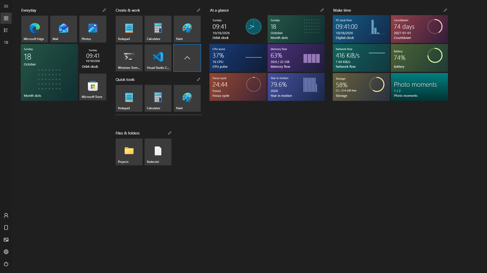
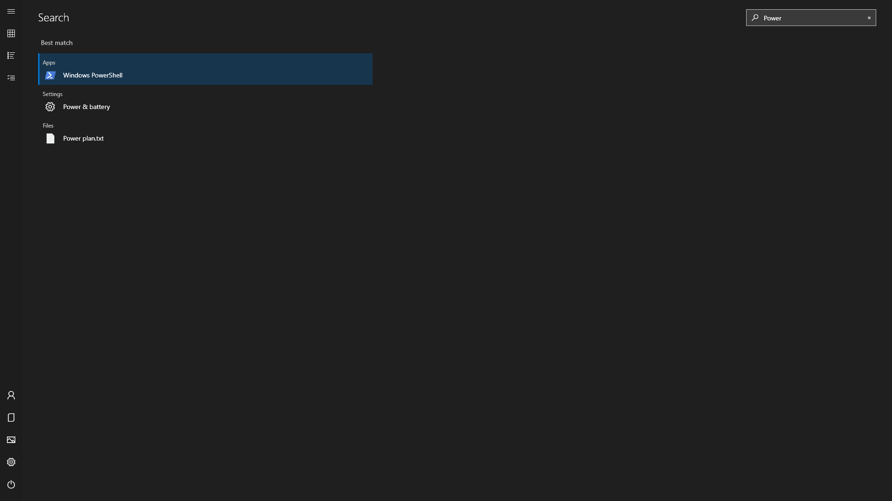
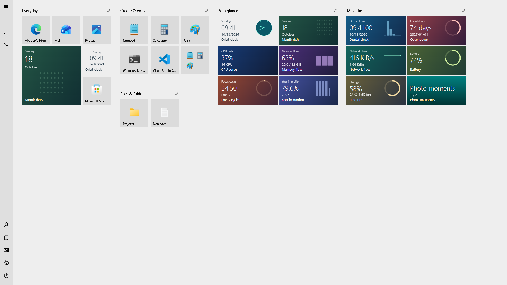
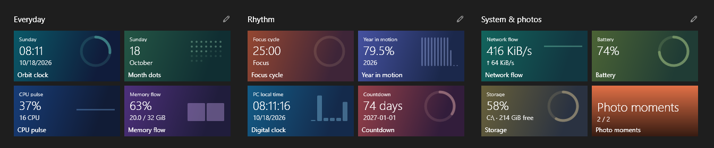

Portable by designx64 & ARM6415 JavaScript tilesEight languagesMIT licensed
A desktop that feels like yours
Everything in its place. Exactly where you put it.
Keep the things you open every day close. Give everything else a place to belong.

A place for everything.
Four tile sizes. Movable groups. Folders that expand in place. Pin an app, a document, a directory or a shortcut, then drag things into a layout that makes sense to you.
Select several tiles to move them together. Undo or redo a layout edit without starting over.

Less looking. More doing.
Press the Windows key and type. Find an app, supported Windows settings, or indexed local filenames. The selected result is ready for Enter.
Windows-key integration and local file search are optional. You decide what belongs in Start.

Make room for your colors.
Follow your Windows theme or choose light or dark. Explore five color families, set your own accent and background colors, or bring in your desktop wallpaper.
High contrast and reduced motion follow your Windows accessibility settings.

More than shortcuts
A little life on your desktop.
Time, focus, PC activity, your chosen photos, weather and headlines. Fifteen included tiles turn a launcher into a glanceable part of your day.
x64 for most Intel or AMD PCs. ARM64 for Windows on ARM.
02
Extract the whole package
Keep the supporting folders beside ReStart.exe.
03
Find your Start
Open ReStart, then use the Windows key, Ctrl + Alt + Space, or the tray menu.
A few useful answers
Before you make yourself at home.
Does it replace Explorer?
ReStart runs as an independent app. Its optional Windows-key and taskbar Start-button integrations are reversible. It does not patch Explorer or inject a DLL.
Does it upload my app list?
No advertising or usage analytics are included. Your app list, layouts and photo-folder selections are not uploaded. If you enable a tile connection, its provider receives the requests and parameters you choose. Read the security policy.
Can I use my own language?
ReStart supports English, German, Spanish, French, Japanese, Korean, Simplified Chinese and Traditional Chinese. Translations are AI-assisted; corrections are welcome.
How do I update?
ReStart can check public GitHub Releases. Download the new ZIP and replace the complete extracted package after closing the app. Local settings stay separate from the app folder. Update guide.
Is it made by Microsoft?
No. ReStart is an independent, MIT-licensed project inspired by the late Windows 10 full-screen Start menu. Windows and the illustrated app names are trademarks of their respective owners.
Built in the open
A small project. More ideas ahead.
Try it. Share it. Report a rough edge. Help shape what comes next.